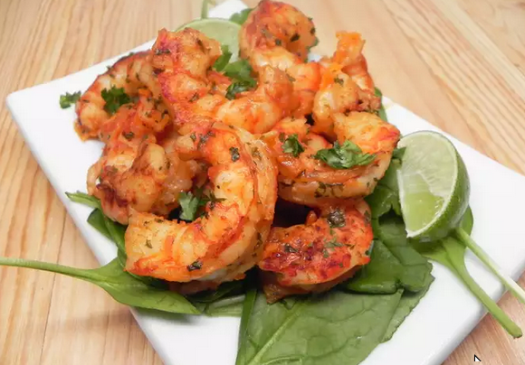

Pan Fried Shrimp

Ingredients
- 8 tablespoons butter, divided
- 1 pound peeled and deveined bay shrimp
- 1 tablespoon lemon juice, divided
- 1 pinch garlic salt, or to taste
- salt and ground black pepper to taste
Directions
- Melt 6 tablespoons butter in a large skillet over high heat.
Add shrimp; cook and stir in hot butter until browned,
about 2 minutes. Reduce heat to medium-low.
- Stir in 1 1/2 teaspoons lemon juice, garlic salt, salt, and pepper;
cook until heated through, about 1 minute. Remove from heat;
stir in remaining 2 tablespoons butter and 1 1/2 teaspoons lemon juice.
Enjoy!